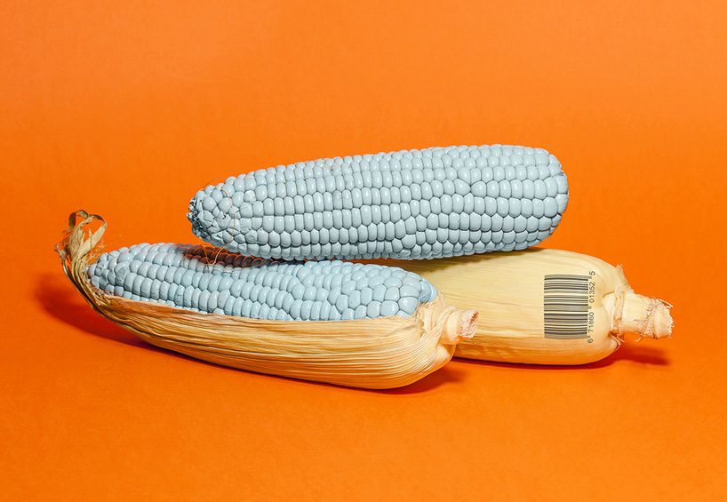

Core Studio

Posts on Are.na gave me the opportunity to expose to different kind of art. I came across the combination of photography and graphic design. The favorite piece of work out of the selections I saved was a work produced by Enrico Becker and Matt Harris in the collection of GMF Fruits. Their purpose of the work was to challenge preconceptions of GMO’s and have a fun look into what Genetically Modified Food could look like. They interestingly explored with the shooting style and went for a more pastel monochromatic still-life approach. This was created for Ligature Journal Issue Zero (2015).
Personally, what was so striking at first sight was the pop of bright color, of orange as the backdrop, and the usual pastel blue corn that makes it look very artificial. In addition, the barcode attached right on the pod corn really intensify the fact of it being a GMO fruit. In fact, the color bright color might also express the message of not being natural since the colors are opposing the neutral color schemes.
Another source is the website called Trendland. This website provides extremely creative artists who created still-life photography works. The two works I came across were Exit by George Stoyanov and The Gorgeous 3D Interior ‘Rubik” Worlds of Molistudio. Stoyanov introduced his 3D illustrations series of random stacked objects. He focussed on various colors, forms and conceptions to achieve more intense emotions, closeness and sense of detail. Similar to Molistudio’s work the stunning color scheme of each piece is very cohesive. This piece is an interior that the artist put them together in a whimsical approach.
Sources
- https://trendland.com/exit-george-stoyanov/
- https://trendland.com/gorgeous-3d-interior-rubik-worlds-molistudio/
Other Useful links
- https://www.designtheplanet.com/importance-of-photography-in-graphic-design/
- https://trendland.com/kontor-kontur-still-life-of-everyday-objects/
- https://www.underconsideration.com/brandnew/archives/friday_likes_55.php
- https://www.underconsideration.com/brandnew/archives/friday_likes_139.php
Back
Core Studio